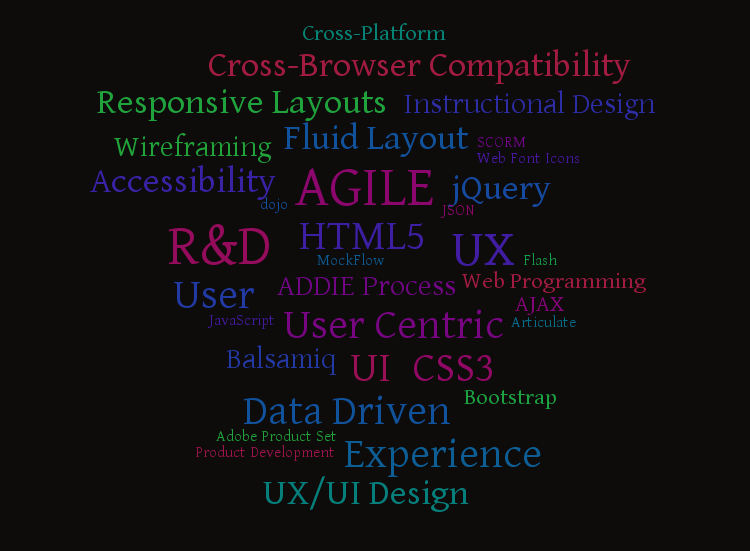

James Sheil
UI/UX Portfolio
Overview
This presentation is intended to highlight some of the UI/UX projects I have worked on and relevant experience...
Work Experience
R&D Product UX/UI Lead
WBT Systems, DublinFrom November 2011 to Present
- Understanding customer and market business requirements and translating these into UX core product features.
- Leading a team of 3 -5 UI/UX developers to conceive, analyse, hand code and test our ideas.
- Establish best practice guidelines in all aspects of product UI/UX development, incl. Accessibility, Fluid/Responsive Layouts, Cross-Browser Compliance and multiple platform support.
- Focused on user-centric designs within an agile, collaborative environment.
- Champion experimentation and use of new innovative UI/UX technologies and trends within the core product.
- Own the user interface specifications documentation from the design phase through to development.
Senior Technical Solutions Consultant & Customer Services UX/UI Lead
WBT Systems, DublinFrom September 2006 to November 2012
- Present product features and benefits to management, staff, customers and partners while setting up and running product demonstrations.
- Collaborate with Product Team, Executive Team, Creative & Technology Leads to help define and roadmap deliverables for experience projects.
- Act as Lead UI/UX designer and contact point for all services-based projects and customisations. This includes communicating the product UI/UX vision and technical implementation to customers and customer outsourced vendors and design agencies.
Relevant Skills
Recent UX & UI Work
R&D Product UX/UI Lead for LMS Server Product Overhaul
A core strength of the WBT Systems principle product - the TopClass LMS - is its capacity to be radically modified and moulded to fit a customer's vision, both functionally and aesthetically via customisation by Services.
Having championed the call to redesign the LMS UX and UI for a number of years ... I was chomping at the bit to get my hands on the product and help provide some TLC to the UI & particularly the UX, moving to a more user-centric design.
My many years on the coal face, helping customers with their own UI/UX project overhauls of the LMS, help to ensure that my concepts are data-driven and based on real user feedback and concerns.
This project is up-and-running for a number of months now ... and is keeping myself and my UI/UX team on our toes.
Some of the UX Features Added
Emphasis on user interaction and presentation via data-driven streams as 'snippets/feeds'Simplified, concise adminstration and learner workflowSingle Sign On via Facebook, LinkedIn etc.Consistent, intelligent use of user context and options via integrated menus.Feature rich HTML5 and CSS3Responsive, fluid layout based on Bootstrap FrameworkFull cross browser ... well IE8 and above anyways ...LESS based CSS
Some of the UX Features Added Contd.
jQuery basedWeb Font IconsMulti-lingual supportAll of this ... and Section 508 compliance for learner users
Take a look at some of the features added below ...
Product UI/UX Video - click here if media does not display correctly .
Product UX Overhaul
click on any thumbnail below to view
Recent UX & UI Work
Customer UX/UI Project
Project Background
The customer (large global brand) wanted to build on the back of the success of a Capability Assessment Tool delivered by myself and my team previously for a number of Business Functions.
They first approached WBT in March 2012 with a view to convert a suite of excel-based business processes and tools to integrated online components hosted within the the TopClass LMS. These tools are all in the area of organisational and individual competency management and assessment.
Customer UX/UI Project
Customer UX Case
- An online user/administrative experience.
- Centralised location of data.
- Consistent UI/UX for all users.
- Ability to generate user, manager, country and market level reports of data.
- Allow for integration with the customer LMS, particularly in the area of creating individual learning plans for the assessment process.
- Allow for localisation into 10+ new languages (incl. Asian) of the administrative and end-user screens (incl. PDF report generation).
- Create custom End-user/Manager workflows for the assessment process.
From the original MS Excel-based assessment process ...
excel based process - click here if media does not display correctly .
... to the migrated assessment process UX
excel based process - click here if media does not display correctly .
Customer Acknowledged Results & Benefits
Creating custom role-based workflows to manage the various Assessment processes.
Improving on UI/UX for user processes, i.e. the assessment process for end-users and managers.
Providing a localised UI to handle all current and future languages identified.
Utilising YUI JavaScript Library Charting functionality to dynamically generate relevant real-time charts for End-Users, Assessors and relevant Management.
Using jQuery JavaScript Plugins and libraries to re-engineer UI/UX screens for end-users, while ensuring that performance for remote/low bandwidth users remained acceptable.
Integrating with core TopClass product features, e.g. LMS Catalogue/Enrolments etc. particularly regarding the creation of Competency-based Development Plans.
Below are a couple of examples of UI/UX concepts from initial design to final output
Instructional Design
My work as an Instructional Designer also helped greatly to hone my UI/UX skills over the years.
I worked with customers to both advise on, and develop online learning materials. The ADDIE Instructional Design Process provided the framework for these projects.
- Performing needs analysis
- Employing Data-Driven Designs
- Collaborating with customer subject matter experts
- Creating engaging content
For a sample course created in Articulate as HTML5 - click here
- Ensuring the content was relevant to the target customer base
- HTML, HTML5 & SCORM content
- Tools incl. hand-coded HTML and javascript, Articulate Product Set and Adobe Captivate.
Some of the customers I have done UI/UX Work for include:


and


{kind=link}
{kind=link}
{kind=link}
{kind=link}
{kind=link}
{kind=link}
{kind=link}
{kind=link}
{kind=link}
If you'd like to get in touch ...
jamesgcsheil@yahoo.co.uk
LinkedIn profile